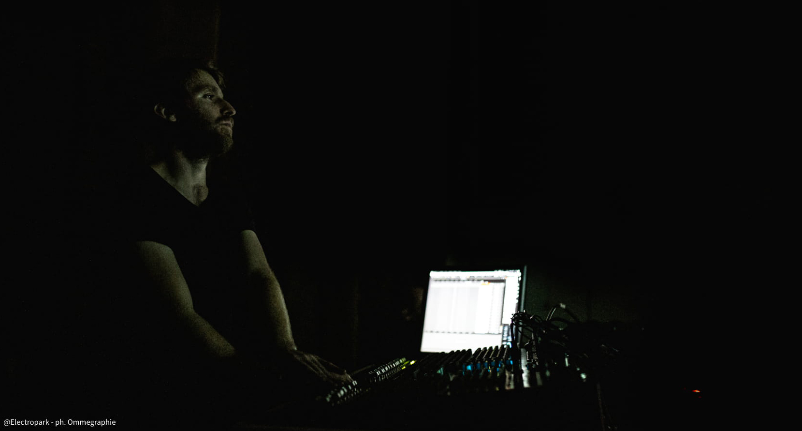
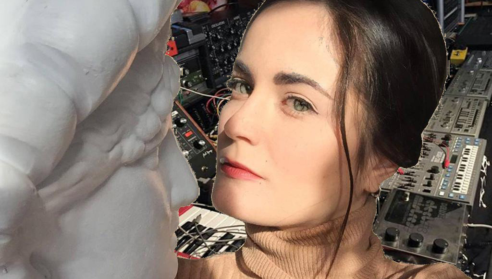

Born near Torino (IT) in 1988, Alberto Barberis is active as composer, guitarist, electroacoustic performer, sound engineer and code artist.
From 2017 he is teaching Electronic Music, Programming and Music Technology at the Conservatorio della Svizzera Italiana of Lugano (CH).
He began playing classical guitar at a young age, studying, among others, with Maurizio Colonna, Giorgio Mirto and Bruno Giuffredi.
He got the Diploma in classical guitar at the Conservatory of Turin (IT) and the Master’s Degree in classical guitar at the Conservatory of Brescia (IT).
Alongside his musical activity, he undertook engineering studies at the Polytechnic of Turin, that stimulated his interest for mathematical applications in music composition, electronic and computer music.
He studied composition with Giovanni Albini, mathematician and composer. Since 2012 he is the Assistant Artistic Director of highSCORE New Music Center (international festival of contemporary music) and from 2015 of OGGIMUSICA.
In 2012 he began an artistic collaboration with electronic musician Alberto Ricca/Bienoise, taking part in the collective of musicians linked to FloatingForest Record, label of improvisation and experimental music.
In 2016 he obtained with Honors the Master of Arts in Composition and Theory at the Conservatorio della Svizzera italiana of Lugano (CH), where he studied with Nadir Vassena, Giovanni Verrando, and Sylviane Sapir. In 2019 he also obtained the MAS (Master of Advanced Studies) in Music Composition in the same Conservatory.
Recently he collaborated with several contemporary music ensembles including the Ensemble Recherche (DE), the Eutopia Ensemble (IT), and he took part in many international music festivals, such as OGGIMUSICA (CH), Nachtstrom (CH), Art Test Fest (IT), Maggio Elettrico (IT), AFEKT (ET), Electropark Festival (IT).
Alongside his artistic activity he develops applications and softwares for music creation, education and performance (tiascolto, EARME, Ormè, SOLO). In 2016 he won the Werkjahr 2017 of the foundation Christoph Delz (Basel - CH), with a research project on the interaction between orchestral instruments and transducers.
In his creations he combines acoustic instruments, electronic devices, digital art and programming with a personal 'biological tension'.
Elena Rivoltini
vocal arrangements, live voice

Elena Rivoltini was born in 1994. She’s an Italian actress, singer, composer and performer. After living in Berlin, London, Rotterdam and Barcelona, she comes back to Italy in order to study classical and electronic music and theatre. In 2017 she graduates at the Drama School of Piccolo Teatro in Milan.
Meanwhile she studies opera singing with a master in Baroque and Renaissance music. She sings in her live performances layering with a loop station all vocal parts of motets BWV 225-231 by J.S.Bach.
She deepens her studies in ancient sacred music attending masterclass hold by the conductor Lorenzo Ghielmi and she’s part of Milan Chamber Choir directed by Giuseppe Reggiori (repertoire: from Gregorian chant to Monteverdi, Palestrina, Mozart, Vivaldi, Bach, Pergolesi, Saent-Saëns, Rheinberger).
She worked as actress and performer with Bob Wilson in his show called Odyssey, with Peter Stein in Platonov by Chekhov, with Oskaras Koršunovas in Three sisters by Chekhov and with Giulia Lazzarini in Faust by Goethe.
She’s part of the dancing company A.M.R., with which she performed in Milan, Turin and Switzerland with a show called Choròs. In 2019 she plays the leading role of Beatrice in The Cenci, composed by Giorgio Battistelli. In 2020 she’s Lady Macbeth in Macbeth, directed by Carmelo Rifici. In this show she also sings arias from 16th century composed by English Renaissance composers such as Dowland, Byrd and Purcell.
She presented her electronic rework of the opera The Coronation of Poppea by Claudio Monteverdi at Venice Biennale 2019. She was director, composer, performer and playwright.
Since 2018 she has been collaborating with Italian composer and code-artist Alberto Barberis, professor of electronic music at Swiss Conservatoire of Lugano. They’re working on a project called Virtual Oratorio, an electroacoustic and theatrical rework of the oratorio St John the Baptist, a sacred composition written in the Holy Year of 1675 by Alessandro Stradella.
She can speak five languages: Italian, English, Spanish, German and French.
She translates contemporary foreign scripts and stage plays.
Rajan Craveri
3D algorithms
Rajan Craveri is a visual artist specialized in the creation of interactive systems for art, and in the generation of images and visuals in real time. He works in the field of live performances and multimedia installations for museums, contemporary art galleries and events. He has taught at the Albertina Academy of Fine Arts in Turin, Milan, Bergamo and Brescia.
He studied at the Accademia d'Arte Drammatica Paolo Grassi in Milan and deepened his studies in New York, Porto and Bergen. In 2006, together with the choreographer Serena Zanconato, he founded Micron, a company that operates between dance, visual arts and technology.
Currently Rajan Craveri is one of the greatest experts of the library jitter of Max/MSP, both nationally and internationally. He constantly collaborates with choreographers, composers, musicians, dancers, directors, poets for the production of shows and interactive installations. He loves collaboration, performance art and bees.
Copyright ©2019 Alberto Barberis. All rights reserved.